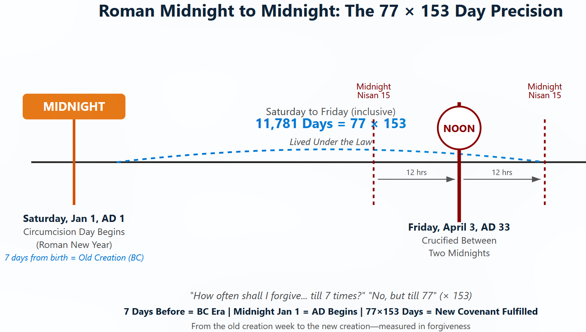
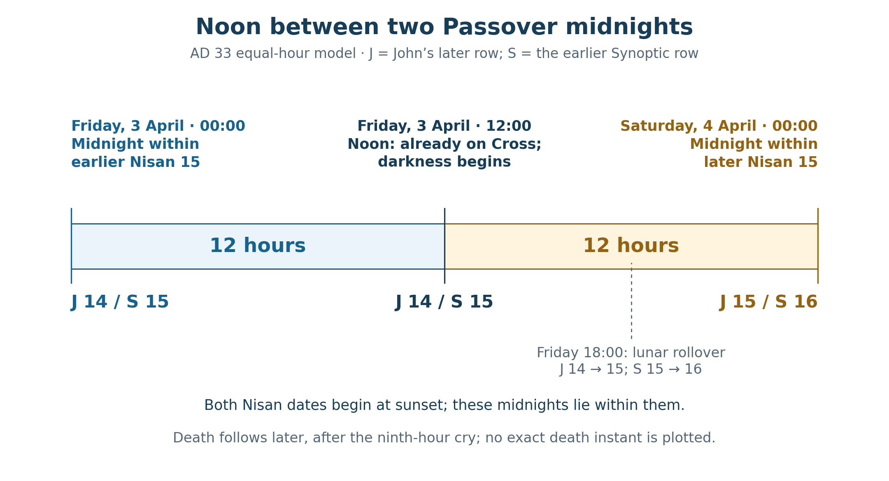

Book 1 · The Cross at the Center of Time · Chapter 15 of 18
The covenant sign and the measure of forgiveness
“When the eight days until His circumcision had passed, He was named Jesus, the name the angel had given Him before He had been conceived.”
— Luke 2:21
Luke joins the covenant sign to the name announced before Christ's conception. The child receives the name by which His people will call upon Him. The bodily mark belongs within the obedience of the Son who has entered Israel's life and will give Himself for the world.1
I return here to the count established in Chapter 8. Within the book’s adopted chronology, the complete midnight-to-midnight frame from January 1, AD 1 at 00:00 to April 4, AD 33 at 00:00 contains 11,781 days, or 77 × 153. It includes all of Crucifixion Friday. Its first factor recalls the measure of forgiveness spoken to Peter; its second belongs to the great catch beside the risen Lord. I want to follow those witnesses toward the sacrifice that gives this count its meaning.
The received dates remain our starting framework: December 25, 1 BC for the birth, January 1, AD 1 for circumcision, and April 3, AD 33 for the Crucifixion. Their role in the book is the one already declared. They give an inherited Christian chronology through which to contemplate Christ's life, without supplying a newly recovered record of His actual birthday.
The count begins at the covenant sign, seven elapsed date intervals after the adopted birth. It does not begin Christ's existence or His life under the Law. Paul says that He was born under it. Circumcision gives this inquiry a particular bodily marker within that life, and the Cross brings us to the giving of the body that has carried the sign.2
In this chapter
- The dates and the count between them
- Three selected beginnings and three Passion dates
- The Roman calendar and its correction
- Seven days before the chosen beginning
- The Roman year spans beside the daily count
- Noon between the two midnights
- Ezra's lambs and Peter's forgiveness
- The altar and the life measured toward it
- Sources and notes
The dates and the count between them
The arithmetic can be stated with two Julian Date reference values. These use 00:00 UT as a computational anchor for each named civil date. They are not recovered Jerusalem clocks for the circumcision or the death.
Table 1 — The two adopted Julian date references
| Julian civil date | Weekday | Julian Date at 00:00 UT |
|---|---|---|
| January 1 AD 1 | Saturday | 1,721,423.5 |
| April 3 AD 33 | Friday | 1,733,203.5 |
Subtracting the references gives the elapsed date-boundary interval:
1,733,203.5 − 1,721,423.5 = 11,780 days.
Counting both named dates then gives:
11,780 + 1 = 11,781 = 77 × 153.
The distinction matters to the picture. From January 1 opening to April 3 opening lie 11,780 elapsed days. January 1 through April 3 contains 11,781 dates. If all those civil-date cells are displayed in full, their outer window closes at April 4 opening. Friday noon lies within the final cell. Neither the calculation nor the cell display recovers the hour of the childhood ceremony or Christ's final breath.3

The complete midnight-to-midnight frame contains 11,781 days, or 77 × 153, from January 1, AD 1 at 00:00 to April 4, AD 33 at 00:00. Friday noon lies halfway through its final day, with Christ on the Cross. These civil boundaries do not assign an exact hour to the circumcision or death. The forgiveness wording is a paraphrase, and the BC/AD labels express the later Christian era applied to these adopted dates.

The original illustration helps me hold the whole movement in view. A covenant marker at one end stands beside the Lamb's offering at the other. The line that joins them is measured through the calendar, while the significance of the measure comes from the life it concerns.
Julian Date itself has a different daily boundary from the civil dates in the display. Its whole-number transitions occur at noon; midnight therefore carries the half-day fraction shown in the table. The astronomical reference system should not be described as beginning at midnight simply because the selected civil dates do.4
Three selected beginnings and three Passion dates
The comparison with other calendar beginnings can now be made explicitly. A proleptic calendar projects a regular rule backward into a period before that rule was historically used in its later form. The regular Julian model supplies our baseline. Projecting the Gregorian calendar backward supplies another, different January 1.
Gregorian January 1, AD 1 corresponds to Julian January 3, AD 1. It is two absolute days later than the Julian January 1 beginning. Applying the same elapsed addition to those different starts necessarily moves the endpoint by two days as well.
A selected one-day-later start can be placed between them. I retain that middle position as a conditional numerical comparison. Whether an actual early Roman calendar reconstruction supplies it is a separate historical question.
Table 2 — One fixed addition applied to three selected starts
| Starting convention | Start expressed in Julian dates | Elapsed addition | Endpoint expressed in Julian dates |
|---|---|---|---|
| Regular Julian baseline | Saturday January 1 AD 1 | 11,780 days | Friday April 3 AD 33 |
| Selected one-day-later comparison | Sunday January 2 AD 1 | 11,780 days | Saturday April 4 AD 33 |
| Proleptic Gregorian January 1 | Monday January 3 AD 1 | 11,780 days | Sunday April 5 AD 33 |
Each row contains 11,781 included dates. The three endpoints give the received Passion sequence: death on Friday, rest in the tomb on Saturday, and the discovery of the opened tomb on Sunday. Burial itself belongs to Friday before the Sabbath; Saturday is not the date on which Christ was first buried.5
I find a threefold figure in that movement. The beginning is shifted by zero, one, or two days, and the ending follows it through the three civil dates. The outputs arise from that chosen arrangement. They do not constitute three independent calculations confirming one historical beginning, and the table does not exhaust every possible reconstruction of early Roman practice.
The Gregorian row also changes the absolute starting datum. Merely translating the same circumcision reference into Gregorian labels would leave the physical interval unchanged. In that translation, Julian January 1, AD 1 becomes Gregorian December 30, 1 BC, and Julian April 3, AD 33 becomes Gregorian April 1. Choosing Gregorian January 1 instead is a new start, not just a new name for the same day.6
The distinction lets the positive comparison remain. Different calendar traditions provide different forms of remembrance. I seek their gathering in Christ without requiring them to be one historical clock. The three-date picture is available for contemplation because the choices have been stated, rather than hidden inside the word calendar.
The Roman calendar and its correction
There was a real difficulty in the early administration of the Julian calendar. Macrobius describes intercalations being made every third year where the intended interval was every fourth. He reports twelve intercalations in thirty-six years where nine were required, followed by Augustus's correction through twelve years without intercalation.7
That account establishes an error and a correction. It does not itself give a complete list of the absolute years in which leap days were inserted or omitted, nor assign a weekday to January 1, AD 1. A reconstruction needs those additional placements and a reference at which historical and regular calendars are aligned. The selected middle row in Table 2 therefore remains conditional; it is not promoted to a demonstrated majority historical date.
The history still contributes something important to this book. A human calendar can be received, misapplied, repaired, and later projected backward for calculation. The providence I seek need not depend on every administrator having kept the rule correctly. God can work through the histories of the people who measure time, including the traditions through which they later remember Him.
Roman civil reckoning also supplies a genuine midnight boundary. Aulus Gellius discusses the Roman day from one midnight to the next, alongside other ways of beginning a day. That gives a historical setting for the civil-date display. It does not establish that Jesus was circumcised at midnight, or that a Roman civil boundary determines John's numbering of the hours before Pilate.8
John's sixth-hour notice remains in the proceedings before Pilate. Mark's third-hour notice belongs to the crucifixion. Their interpretation requires the care already given in Chapter 10. A change of calendar labels or a reference to Roman jurisdiction does not by itself settle the relation between those notices.
The tomb's seal belongs to another part of the narrative. Matthew describes the securing of a tomb in which Christ has already been buried. The seal can be contemplated as the attempt of authority to hold Him in death. It does not impose one recovered midnight clock upon circumcision, death, burial, and rising. Pilate's words about the guard also leave a question about the guard's immediate provenance; I do not need to settle it to follow Matthew's scene.9
Seven days before the chosen beginning
Moving from circumcision back to the adopted birth shifts the beginning by seven days. A fixed count must then shift its ending by seven as well. From December 25, 1 BC, the 11,781st included date is Friday, March 27, AD 33, one week before Crucifixion Friday. It is not the whole Palm-Sunday-to-Resurrection window.
The actual counts to the selected Passion dates can be shown separately.
Table 3 — Counts from the adopted December 25 birth
| Closing Julian date AD 33 | Elapsed date intervals | Included dates |
|---|---|---|
| March 27 Friday | 11,780 | 11,781 |
| March 29 Palm Sunday | 11,782 | 11,783 |
| April 3 Crucifixion Friday | 11,787 | 11,788 |
| April 5 Resurrection Sunday | 11,789 | 11,790 |
The first row retains the product from a birth beginning at its own calculated endpoint. The later rows retain the dates of the received Passion sequence. Their numerical differences are real within the adopted framework. No one fixed inclusive total can describe every closing date in an eight-date Sunday-to-Sunday window.10
The seven days before January 1 also invite contemplation in their own right. December 25–31 comprises seven included dates; January 1 is the eighth date from the adopted birth. Within the later BC/AD convention, those seven dates lie on one side of the era boundary and the circumcision date lies on the other. I see a form of entrance into a new beginning.
The people living through those dates did not call the approaching year AD 1. The Christian era was formulated later. Dionysius Exiguus's Paschal preface makes the choice of numbering years from Christ's Incarnation explicit. Reading the adopted infancy week through that later era is an act of Christian remembrance, rather than a report that Rome announced the Anno Domini era at the child's circumcision.11
That later history belongs within the gathering too. The calendar did not have to bear a Christian name at the time of the event in order to receive such a name afterward. I contemplate the way Christ's life becomes a point of reference for generations that count back toward it and forward from it. The existence of the convention and the historical accuracy of its birthday assignment remain different questions.
The Roman year spans beside the daily count
Two Roman chronological notices provide a further numerical comparison. The epitome of Livy records the move to January 1 for consuls entering office in 153 BC, in the setting of the Spanish war. This is a specific consular change. It should not be expanded into a claim that every form of Roman year beginning was invented on that date.12
Caesar's reform supplies the other notice. Suetonius describes the correction of the year and the regular fourth-year intercalation rule. The first Julian year is conventionally placed in 45 BC; Censorinus supplies a numerical chronological control for that placement. Those year labels allow 153 and 77 to appear at a larger scale beside the daily product.13
Table 4 — Three comparisons between civil year labels
| Earlier year label | Later year label | No-year-zero calculation | Result |
|---|---|---|---|
| 153 BC | AD 1 | 153 + 1 − 1 | 153 years |
| 45 BC | AD 33 | 45 + 33 − 1 | 77 years |
| 458 BC | AD 33 | 458 + 33 − 1 | 490 years |
The last row will bring us to Ezra's lambs. All three rows use the same civil cross-era operator. They compare year labels rather than independently timed anniversaries. The 45 BC calendar beginning and an April event in AD 33, for example, do not share a known month-and-day anniversary merely because their year labels are seventy-seven years apart.14
I find the 153 and 77 associations meaningful beside the 77 × 153 day count. The units differ: years in these two Roman comparisons, included dates in the life construction. Their gathering is the reading I propose. Neither a Roman historian nor a Gospel writer is being credited with explicitly multiplying them.
The empire's institutions enter the picture as part of human history: its officers, its civil boundaries, its reform, and its exercise of judgment. I seek the sovereignty of the Lord whose work can receive all those things into a purpose their administrators did not see. The numerical likeness serves that contemplation while the historical notices keep their actual scope.
Noon between the two midnights
The two lunar reckonings compared in Chapters 4 and 10 give us a frame around Crucifixion Friday. With the earlier month beginning, Friday's daylight falls on Nisan 15; with the later month beginning, it falls on Nisan 14. I select the midnight within Nisan 15 in each reckoning: Thursday/Friday midnight in the earlier one and Friday/Saturday midnight in the later one.
Those selected midnights stand twenty-four hours apart. Friday noon is twelve hours after the first and twelve before the second:
12 + 12 = 24 hours.

The diagram selects the midnight within each row's Nisan 15. The lunar dates begin at evening, not at these midnights. Noon is the midpoint of the chosen civil-day frame, with Christ already on the Cross. His death follows later in Mark's sequence; the exact instant is not plotted.

The earlier date associations with the Galilean and Pharisaic setting, and the later associations with Judean Temple and Sadducean reckoning, retain the qualifications established in Chapter 4. I bring them together here as the book's proposed calendar harmony. Neither Gospel instructs the reader to construct these two midnight references.15
Exodus gives midnight its Passover gravity. The firstborn are struck at midnight, while the people under the blood-marked doors are preserved. I hear that testimony beside the Lamb on the Cross. The selected midnights allow the two Nisan presentations to frame the same Friday noon.
The protection in Exodus is not said to expire at another midnight. The people are told to remain inside until morning. Nor do the Gospels report two destroyer visitations at the calculated Passion midnights. Their relation to Egypt is the theological comparison I am drawing from the calendar figure.16
Mark gives the darkened center its own wording:
“From the sixth hour until the ninth hour darkness came over all the land.”
— Mark 15:33
Christ is already crucified when the darkness begins. At the ninth hour comes His cry, and death follows in the narrative. Modern noon and three-in-the-afternoon references display that sequence schematically; they do not independently supply a minute for the beginning of crucifixion or the final breath.17
Noon takes on the character of night. I contemplate the darkness beside the Passover judgment and the darkness at creation's beginning. The relation is more than a change of mood for me. I believe Christ's hour may be the place from which time itself receives its order, reaching back through the histories that have led us here and opening forward into renewed creation. That is the divine action I seek through John's perspective, without making a clock calculation prove its reach.
The full-moon Passover setting also prevents an ordinary solar eclipse from explaining midday darkness. It does not make every kind of eclipse impossible: a lunar eclipse belongs to full moon and concerns the Moon, not the daytime Sun. The distinction will matter when the next chapter turns to the heavens.18
Ezra's lambs and Peter's forgiveness
Ezra's arrival offering brings us back to the altar. His company offers twelve bulls, ninety-six rams, seventy-seven lambs, and twelve male goats. Together they are:
12 + 96 + 77 + 12 = 197 animals.
The seventy-seven lambs form a particular group within that offering. They belong to the return and restored worship. The numerical reading should preserve their identity rather than replace the whole offering with seventy-seven animals.19
The Canon's Ezra decree framework places the return in 458 BC. Its relation to AD 33 gives the 490-year line in Table 4. Ezra's arrival and offering are not thereby proved to fall on a corresponding first-month anniversary. The comparison is at the scale of the year labels, within the adopted decree-to-Passion framework.20
Matthew gives the seventy-seven another setting. Peter asks about forgiveness, and Jesus answers:
“I tell you, not just seven times, but seventy-seven times!”
— Matthew 18:22
The BSB also notes the alternative seventy times seven. The main reading supplies 77; the alternative supplies 70 × 7 = 490. Chapter 8 heard both beside Ezra's lambs and the year-level decree frame. I retain their contribution here rather than make one English rendering suppress the other.21
Seventy-seven is not confined to these passages. Genesis places it in Lamech's boast of multiplied vengeance, and Judges records seventy-seven leaders and elders of Succoth. What draws me to the forgiveness saying is its narrative direction. Read beside Lamech, the multiplication turns from enlarging retaliation toward enlarging mercy. Its significance comes through that movement, not through a claim that no other text contains the number.
John supplies the 153 in a scene of provision and renewed calling. The net is full, yet not torn. Peter brings the catch ashore, and the risen Lord feeds the company. The subsequent questions about love lead into the care of Christ's lambs and sheep. Mercy is being embodied in the restoration of a servant.22
I therefore place the 77 lambs, the forgiveness saying, and the 153 fish within one field of testimony. The multiplication is my proposed joining of their numbers. Ezra does not call his lambs days, and John does not explicitly date the 153 fish as the closing term of a life ledger. The comparison receives its meaning from the Lamb who gives Himself and gathers His people after death.
The altar and the life measured toward it
John identifies the Temple of Christ's saying with His body. Revelation's measuring reed directs attention toward temple, altar, and worshipers. Reading those witnesses together, I have approached the measurement of the incarnate life as a way of attending to the living Temple and His offering.23
The included dates lead from the covenant sign toward the Cross. They do not calculate a price that makes grace proportionate to a quantity of days. Christ's obedience gives the count its personal center. The One who teaches forgiveness bears the cost of reconciliation, and the risen Lord receives the servant who denied Him.
The three Passion dates remain before me: the sacrifice on Friday, the Sabbath rest in the tomb, and the opened tomb discovered on Sunday. The Roman calendar comparisons and the paired Nisan midnights offer different views of that history. Their differences belong within the inquiry. I seek a common testimony in Christ while retaining the choices by which the numerical figures were formed.
At the Cross, Mark gives the centurion's confession:
“Truly this man was the Son of God!”
— Mark 15:39
The confession follows the sight of how Jesus breathed His last. It is a human witness at the place toward which our calendar measure has led. I want the numbers to serve that recognition. The purpose of the count is the Son who gives Himself, whose work may order the past as well as receive it, and whose life opens the future for those He gathers.
The next chapter turns toward the celestial setting of AD 33: the Passover Moon, the Morning Star, and the proposed procession at the Ascension. I will ask how these events may bear witness before heaven, whether or not people on earth recognized them. Their dates and positions will remain open to calculation; their meaning will be considered through Scripture.24
Sources and notes
1. Luke 2:21; Genesis 17:9–14. The opening quotation follows BSB exactly. Luke gives the eighth-day circumcision and naming, not its clock hour, an infant's reported reaction, or a claim that this was the first blood ever shed in His life. Return to text
2. Galatians 4:4–5; Colossians 2:11–14. Christ is born under the Law. Circumcision, burial, raised life, forgiveness and canceled debt supply the covenant setting. The received December 25, 1 BC / January 1, AD 1 dates remain the declared framework of Chapter 8, also retained as adopted tradition in Repository File 13, §§7.1–7.3. They do not replace the Repository's separate historical nativity reconstruction. Return to text
3. January 1, AD 1 → April 3, AD 33 gives 11,780 elapsed Julian date intervals and 11,781 included dates, with no civil year zero. A complete display of those included civil-date cells runs from January 1 opening to April 4 opening. Friday noon is 11,780½ days after the first opening in that schematic frame. These are different operators from an exact event-to-event duration. The adopted December 25 → January 1 relation is seven elapsed intervals / eight included dates. Return to text
4. U.S. Naval Observatory, Julian Date. JD is noon-based; 00:00 UT1 has fractional part .5. For the two civil dates, the integer JD at noon is 1,721,424 and 1,733,204 respectively. The table's 00:00 UT references are mathematical anchors, not historical Jerusalem event times. Integer Julian Day Number usage must not silently change the half-day convention. Return to text
5. Mark 15:42–47 and 16:1–6; John 20:1. The middle start in Table 2 is the selected Julian January 2 boundary. All endpoints are Julian. Adding 11,780 elapsed days yields 11,781 dates inclusive. Friday is the burial day; Saturday is rest in the tomb. The moment of rising remains unreported, and Sunday's discovery precedes any claim about its exact hour. Return to text
6. Proleptic Gregorian January 1, AD 1 is JD 1,721,425.5, two days after Julian January 1. Its 11,780-day addition reaches JD 1,733,205.5: Julian April 5 / Gregorian April 3, AD 33. The baseline's same physical references are instead Gregorian December 30, 1 BC → April 1, AD 33. A Gregorian April 5 endpoint would be Julian April 7. The table changes the start, while the latter conversions merely rename unchanged instants. Return to text
7. Macrobius, Saturnalia 1.14.13–15. The primary account gives twelve versus nine intercalations over thirty-six years and Augustus's twelve-year suspension. It does not name all skipped civil years, certify a January 1, AD 1 weekday, or establish a modern scholarly majority. No assertion that exactly three historical starting possibilities exist is made here. Return to text
8. Aulus Gellius, Attic Nights 3.2; John 19:13–16. Gellius supports Roman midnight-to-midnight civil reckoning. That boundary does not by itself determine how John numbers the sixth hour, nor establish a midnight circumcision. John's notice remains before Pilate; Mark's crucifixion-hour sequence retains its own setting. Return to text
9. Matthew 27:57–66. Burial precedes the following guard/seal scene. Pilate's wording about having/taking a guard has been read in more than one way; the narrative does not establish one continuous Roman clock governing all the proposed endpoints. The clock hour of the rising is not reported. The sealed-tomb comparison remains an image of authority confronted by Resurrection. Return to text
10. December 25, 1 BC → March 27, March 29, April 3, April 5, AD 33 gives respectively 11,780 / 11,782 / 11,787 / 11,789 elapsed intervals; adding one gives the four included totals in Table 3. Palm Sunday to Resurrection Sunday is seven date intervals / eight included dates. No independently reported Gospel event is assigned to the calculated March 27 endpoint merely because it retains the product. Return to text
11. Dionysius Exiguus, Paschal preface. Dionysius chooses years from Christ's Incarnation rather than continuing the Diocletian era. This is later Christian era formation, not a contemporary Roman announcement in AD 1. The BC/AD boundary in the supplied image is a retrospective theological reading of the adopted chronology. Return to text
12. Livy, Periochae 47.13–14. The epitome records the January 1 consular entry in the Spanish-war setting, conventionally dated 153 BC. The notice concerns when consuls took office. It does not demonstrate that January 1 had never previously served as a Roman calendrical beginning in another sense. Return to text
13. Suetonius, Julius Caesar 40.1–2; Censorinus, De die natali 20.11 and 21.6–7. Caesar's reform and the first Julian year's placement in 45 BC supply the historical setting. The first-year placement and Macrobius's later error account are related evidence with different details; neither supplies every early leap-day placement needed to prove Table 2's middle row. Return to text
14. Civil year-label comparisons crossing the era boundary use BC + AD − 1: 153 + 1 − 1 = 153; 45 + 33 − 1 = 77; 458 + 33 − 1 = 490. These differ from included year-label counts and from an exact same-clock event anniversary. January 1, 45 BC → April 3, AD 33 extends past the seventy-seventh anniversary by the interval from January 1 to April 3 in AD 33. Return to text
15. Chapters 4 and 10 retain the proposed earlier/later lunar assignments. In the retained evening-start model, Friday 00:00 is J14/S15, Friday 12:00 is J14/S15, and Saturday 00:00 is J15/S16. Friday 18:00 opens J15/S16. The selected Nisan 15 midnights lie within those dates, not at their openings. Historical community assignments remain proposed; the midnight-frame construction is the author's reading. Return to text
16. Exodus 12:22–30. Midnight judgment and remaining indoors until morning are explicit. Protection is not said to end at the next midnight, nor are two Passion-week destroyer visits narrated. The two references in the diagram compare the proposed Nisan presentations with the Exodus image. Return to text
17. Mark 15:25, 33–39. The darkness quotation and closing centurion quotation follow BSB exactly. The sixth-to-ninth-hour darkness is commonly shown near noon to three; death follows the ninth-hour cry in the narrative. The diagram does not equate the start of crucifixion or death with noon, nor turn an ancient hour notice into a recovered modern minute. Return to text
18. NASA, eclipse phases. A solar eclipse requires new moon; a lunar eclipse requires full moon. Full-moon Passover therefore excludes an ordinary solar eclipse as the midday mechanism, not the possibility of a lunar eclipse. The astronomical question is distinct from the author's reading of the darkness and possible actual Cross-centered ordering of time. Return to text
19. Ezra 8:35. The listed groups are 12 bulls + 96 rams + 77 lambs + 12 male goats = 197 animals. Repository File 58, Appendix E retains this Ezra list as collateral source history rather than a new rule identifying animals with elapsed Gospel days. The offering is not Ezra 6's Temple-dedication list. Return to text
20. Ezra 7:7–9; Repository File 13, §6.4, for the adopted Artaxerxes-year-seven / 458 BC decree framework and AD 33 comparison. Ezra gives a fifth-month arrival notice; the offering is not thereby placed on the Crucifixion's first-month anniversary. The 490-year frame retains its adopted chronological basis. Return to text
21. Matthew 18:21–35; Genesis 4:23–24; Judges 8:14. BSB prints seventy-seven in Matthew and notes seventy times seven. The exact quotation includes not just seven times. Genesis's vengeance setting and Judges's leaders show other uses of seventy-seven; the chapter does not base a prophetic claim on numerical exclusivity. Return to text
22. John 21:1–19. The 153 belongs to the large fish, with the net not torn. The ensuing meal and questions restore Peter to the care of Christ's people. John does not prescribe multiplying the catch by Ezra's lambs or assign a civil date to the breakfast. The joining is the author's typological proposal, developed more fully in Chapter 8. Return to text
23. John 2:19–22; Revelation 11:1–2; Colossians 2:13–14. The living-Temple and altar comparison belongs to the author's Christological reading. Revelation's measuring command does not explicitly specify an infancy-to-Passion calculation. The 7–7–7 beginning discussed in Chapter 8 is a separate typological arrangement, not a claim that this 11,781-date window contains 777 Sabbaths. Return to text
24. The chapter's calculations establish the stated Julian/Gregorian relations and adopted year-label spans. Its historical qualifications remain in place for the birth tradition, early Roman intercalations, community calendar assignments and unreported event hours. Chapter 16 must independently distinguish observed celestial phenomena, computed visibility, chronology and proposed theological meaning; the present count does not settle those questions in advance. Return to text
Scripture quotations are from the Berean Standard Bible (BSB), public domain.